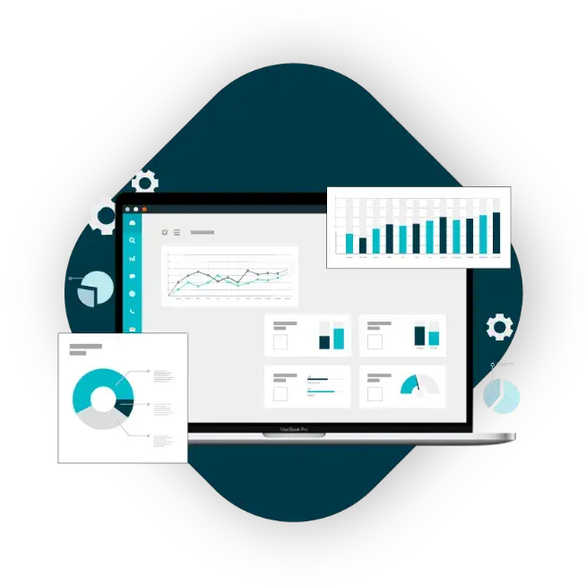
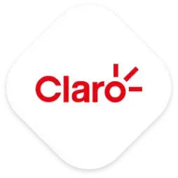

Experiencia de cliente mejorada
Con el entrenamiento continuo de los agentes a través de cientos de feedbacks, los agentes aceleran conocimientos del producto o servicio.
Procesamos tus llamadas, chats y emails con inteligencia artificial para automatizar la calidad de los agentes de ventas o atención al cliente y la investigación de mercado.
Con el entrenamiento continuo de los agentes a través de cientos de feedbacks, los agentes aceleran conocimientos del producto o servicio.
Multiplica 20 veces las evaluaciones de tu equipo de calidad para mayor acompañamiento a tus agentes y disminuye en 60% los gastos de tus equipos de calidad.
Tus plantillas de evaluaciones de calidad a tus ejecutivos, 100% realizadas por Wi IAudit.
Identifica oportunidades de capacitación y reconoce a los agentes destacados.
Analiza la historia completa de la relación con cada cliente, mejorando su experiencia en todo el recorrido con análisis de IA detallados.
Acelera las herramientas de venta y cobranza, haciéndolas diez veces más eficientes mediante algoritmos de IA avanzados.
Mejora los tiempos de revisión de contratos en un 98%, pasando de una semana a solo una hora, con la asistencia de IA que garantiza precisión y eficiencia.
Repositorio de audios, chats y emails. Integración con APIs.
Metadata e integración con Wi IAudit.
Procesamiento de miles de audios, chats y mails.
Monitoreos de calidad listos para ser revisados por el ejecutivo.
Conformidad de los monitores por parte de los ejecutivos.
Promedios, análisis, detección de áreas de oportunidad y fortalezas.
Evalúa automáticamente todas las interacciones, ya sean llamadas telefónicas, correos electrónicos o chats de WhatsApp.
Identifica y entiende las emociones o sentimientos del cliente para una mejor atención.
Proporciona retroalimentación inmediata a los ejecutivos durante la atención, con causas de insatisfacción o recomendaciones.
Analiza fortalezas, áreas de oportunidad, FCR y empatía del ejecutivo. Detecta áreas de mejora y éxitos de tus ejecutivos.
Anticipa el Net Promoter Score basado en interacciones reales para mejorar la satisfacción del cliente.
Capacidad de resolver la consulta o problema de un cliente satisfactoriamente durante el primer contacto con el servicio de atención.
Métricas que evalúan cómo los ejecutivos manejan situaciones emocionales, expresan empatía genuina y adaptan su tono y respuesta según el contexto del cliente.
Se integra fácilmente con llamadas telefónicas, correos electrónicos y WhatsApp. Sus robustas APIs permiten una implementación rápida y fluida.
Un analista de calidad en promedio puede hacer 200 monitoreos al mes. Con Wi IAudit puedes hacer, por el mismo presupuesto, 1000 monitoreos, y con un feedback de valor al ejecutivo.


¿Tienes dudas? Déjanos un mensaje.